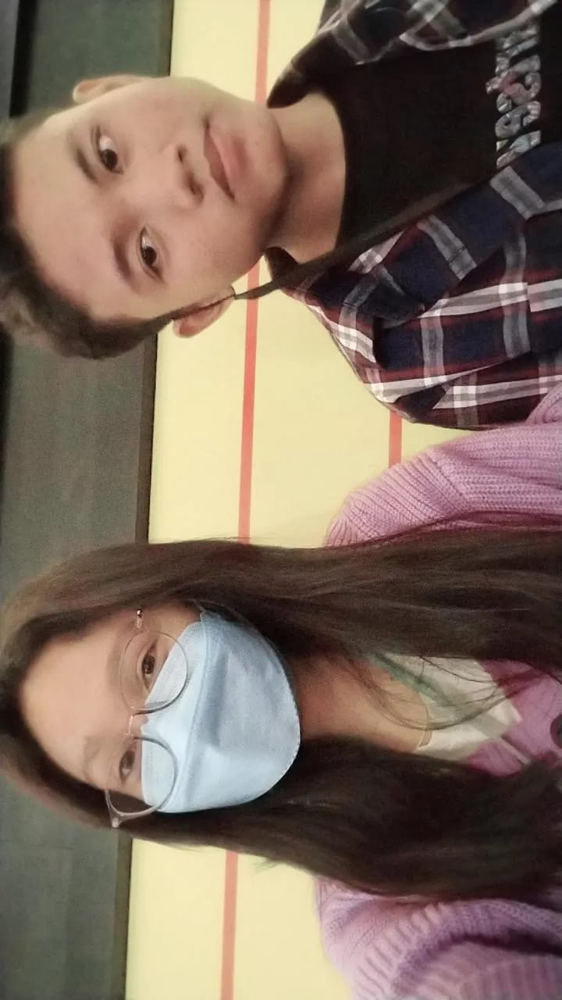
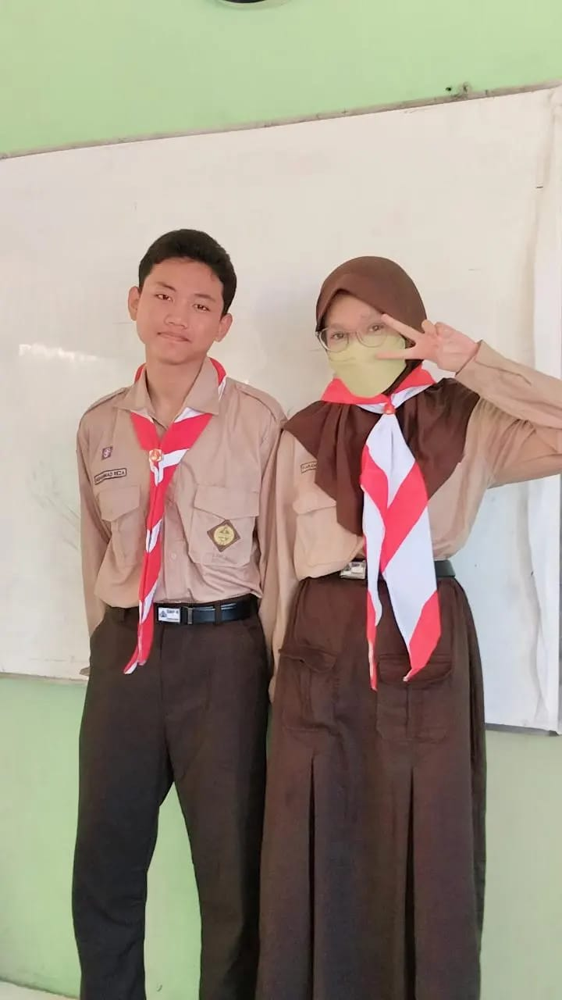
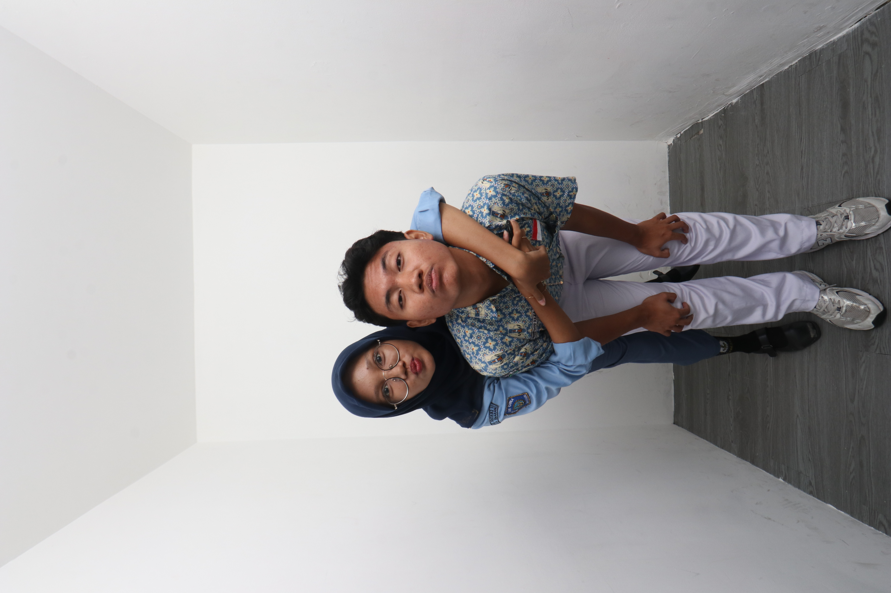
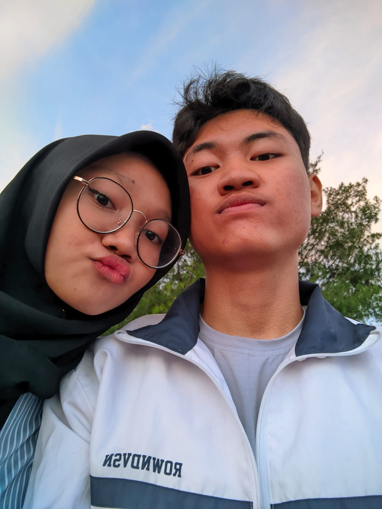
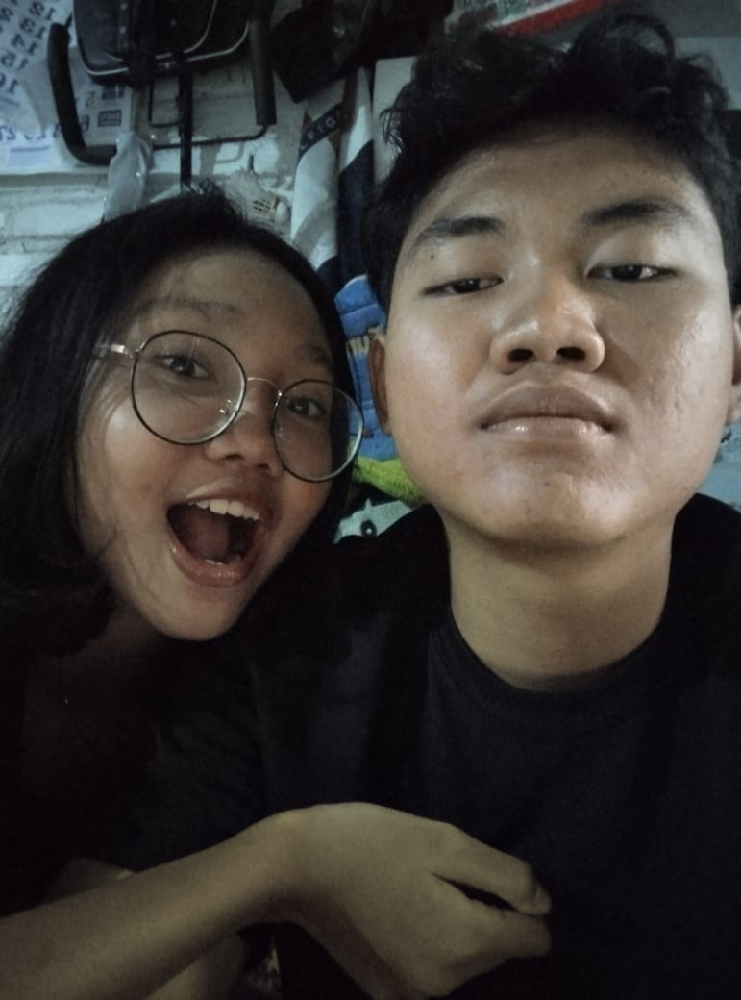

Gundutt
Selamat ulang tahun untuk orang yang paling spesial di hidupku. Aku bersyukur banget karena bisa kenal kamu. Dari sekian banyak orang di dunia ini, semesta mempertemukan aku dengan seseorang yang selalu berhasil bikin hari-hariku jadi lebih indah. Itu gambarnya yang bener bener kita awal deket dengan kita nonton bioskop bareng dan lainya, itu juga foto ke 2 setelah aku masih malu malu buat minta foto, tapi untungnya kamu ngajakin dulu, kalau ga ya ga kita yang pacaran sekarang.


Our Memories
Aku masih suka sama kamu masih sering kecintaan banget gatau kenapa padahal hubungan udah lama, gatau cuma aku yang kecintaan atau kamu juga, mayopp kalo aku masih kekanakan gituu masih suka jeaolus ga jelas gitu tapi aku tuh sayng kamu ihhh cinta banget pokokonyaaa ini isinya tentang kita yang awal deket masih bocil bangett yaa, itu juga ada coklat pertama yang kamu kasih buat aku, sekecil apapun barangnya aku masih inegt kok dan pastinya bakalan jadi memori yang ga terlupakan buat aku, karena itu juga jadi awal dari semuanya, awal dari hubungan kita yang sekarang ini. Dan itu aku seneng banget dapet pemberian coklat dari cowo yang aku sayaang sampe sekarang. Masih duduk bareng xixixi lucuuu


Pulang Sekolah
Ini waktu ambil rapot itu rasanya bener bener sedih karena ya gimana ya terakhir pulang bareng, dan habiis pulang dari sekolah lanjut main huhuu, tapi gapapa tahann cuma 3 tahun kok ini. Dan itu yang aku pengen pulang sekolah langsung main, tapi sedihnya kemarin kita cuma bentar but okeyy. Tapi aku seneng banget bisa pulang sekolah bareng kamu, karena itu juga jadi salah satu momen yang paling aku inget banget, dan pastinya jadi salah satu kenangan yang paling indah buat aku. Semoga SMK ini aku juga masih bisa ngerasain pulang sekolah lanjut main kayak SMP dulu.



Pantai
Ini waktu pertama kali kita pergi ke pantai bareng ipp rasanya seruu banget sumpahh dan pemandangnya cakep, tapi ga kalah cakep sama cowo yang bawa aku ke pantai itu, karna kamu ga kalah cakep ihh. Nanti kita ke pantai lagi dan foto foto yang banyak yaa jangan sampai ga foto loh yyaa, pookonya aku mau pamer punya cowo yang ganteng banget.


Rumah
Salah satu hal yang pengen aku lakukan terus sama kamu adalah makan bareng. Nyoba makanan baru, jajan random, atau cuma beli cemilan kecil sambil ngobrol. Karena ternyata, hal sederhana kayak gitu bisa jadi kenangan paling manis. Kayak itu hal yang selalu aku tungguin setiap minggu jujur ketemuan 2 minggu sekali itu nyiksa banget, apalgi di saat aku lagi sakit kayak waktu itu bener" sedih banget kayak kamu ga ngertiin aku, padahal aku udah bilang gapapa aku yang kesana Pokoknya kalo udah ada motor mainya seminggu sekali, terus aku di jemput sama di anterin pulang kalo kerumahmu


Aku Kamu dan Kelas
Ternyata punya cowo yang satu kelas itu seru juga yaa, ga nyangka bakal seseru itu, awalnya aku mikir buat pacaran diem" cuma kamu gamau jadi aku lanjutin la kok enakk xixixi dan kitz bener" habisi waktu di kelas itu bikin seneng banget tau kayak SMP rasanya pengen sekolah ga pengen libur rasanya, jadi penyemnangat sekolah Sudah di titik BK capek ngasih tau kita buat ga oacaran tapi kita masih ngeyel sampe capek sendiri kalo di inget" kita tuh nakal cuma kalo ga gitu ga ada kenangnya lohh, ga bakal aku lupain sihh


DP Mall
Hal yang selalu aku tunggu adalah setiap akhir bulan di hari rabu jarena pasti ada p5 yang bikin pulang gasik dan kita bisa langsung nonton di DP atau sekedar muter" aja, tapi itu hal yang bener" pengen aku ulang berkali" deh hal terseru Bayangin pulang sekolah langsung pergi main sampe sore cewe mana yang ga seneng, tapi sekarang ga bisa kaya gitu lagii ihh padahal seru banget taukk tapi semoga kita habus pulag sekolah langsung mampir ke DP lagi yaa, aku kangen banget sama momen itu, dan pastinya kangen banget sama kamu juga.


Study Tour
Ini hal yang membekas dihatiku sihh soalnya kita pergi study tour bareng rasanya sueng ga karuan awalnya sedih h1 tpi interaksi kita dikit, tapi kamu benr" pinter manage waktu kamu hari 2 di bagi temen sama pacara, lanjut di hari ke 3 full sama aku cuma sedih ihh cuma naik beberapa tapi aku uda seneng juga kok mayopp yaa gara" aku kamu jadi mabok gitu huhuh, semoga kalo uda bisa traveling kita ngulangi lagi ya ke dufan pas malem yang pastinya sama kamu juga dongg i lovee youu dufann dan rejaaa